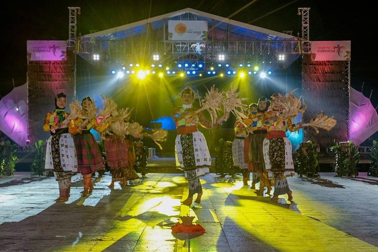
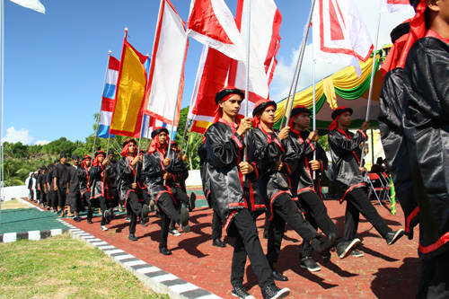
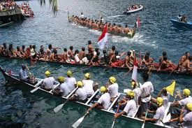

1. Festival Teluk Jailolo
Festival ini bisa dibilang paket lengkap, karena cukup banyak rangkaian acaranya, yang meliputi budaya hingga kuliner. Secara garis besar menjadi empat rangkaian acara besar, mulai Ritual Budaya, Atraksi Budaya, Gelar Seni Budaya Moloku Kie Raha dan acara puncak Sasadu On The Sea. Bagi wisatawan, tak hanya bisa menikmati suguhan berbagai penampilan hingga kuliner, tetapi juga bisa ikut serta di berbagai lomba. Mulai underwater competition, fun dive, fun bike, dan Ekspedisi Talaga Rano.
2. Festival Tidore
Festival Tidore di Kota Tidore Kepulauan ini sekaligus merayakan hari hari jadi Kota Tidore. Tahun ini serangkaian acara dalam festival tersebut berlangsung mulai 23 Maret-12 April 2018. Festival ini sebagai upaya menggali, mengembangkan sekaligus melestarikan warisan sejarah budaya Kesultanan Tidore dan memperkenalkan serta mempromosikan Tidore dengan seni, alam dan budaya sebagai daya tarik wisatawan. Festival ini memiliki tiga agenda utama, mulai Parade Juanga (keliling pulau dengan kapal formasi perang oleh sultan dan bala tentaranya), Perjalanan Paji (keliling pulau di darat dengan formasi perang menceritakan revolusi Sultan Nuku), dilanjut dengan Kirab Agung Kesultanan Tidore.
3. Festival Kora-Kora
Festival Kora-kora tahun ini digelar mulai 1-3 Desember 2018, untuk memeriahkan peringatan Hari Jadi Ternate yang ke 768. Umumnya diisi dengan kegiatan bahari sehingga sekaligus sebagai sarana untuk membangkitkan semangat bahari di masyarakat Ternate. Sejumlah kegiatan menarik akan tersaji seperti lomba mancing tradisional, lomba foto bawah laut, lomba dayung perahu kora-kora dan pawai perahu kora-kora hias. Berbagai kegiatan umumnya dipusatkan di Pantai Ternate. Khusus lomba foto bawah laut tersebar di sejumlah titik penyelaman yang selama ini dikenal memiliki panorama bawah laut yang sangat menarik, di antaranya di Pulau Hiri.